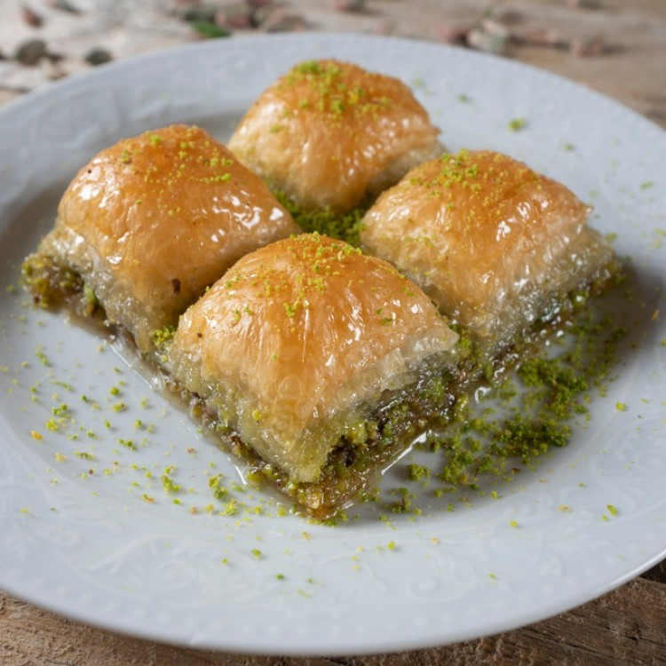
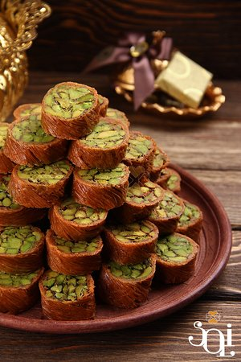
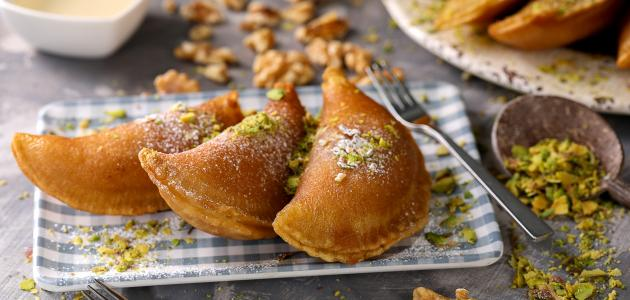
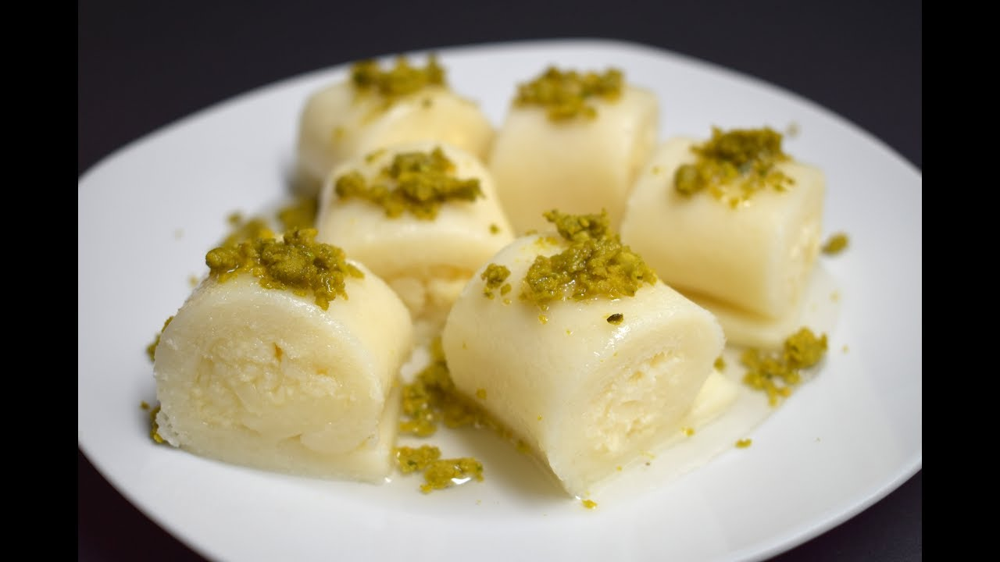

Syria is famous for its delicious food and also sweets. There are all the delicious sweets.
In many days, people make a lot of sweets, and the market becomes full of people who want to buy sweets.
There are many types of sweets, including [Baklava, Mabroma, and also Al-Mashabbak], which are sweets
that are offered to guests on occasions,
and their price is average.
Kinds of sweets
baklava

They are sweet pastries consisting of thin layers of dough and stuffed with nuts such as
walnuts and pistachios.
They are sweetened by pouring syrup or honey on them, which makes them more cohesive.
mabroma

Mabrouma with pistachio, municipal ghee and very light syrup.
Qatayef

Qatayef is a pancake eaten raw or fried with a variety of fillings, including cream, cheese
and walnuts
halawa

Halawa al-Jibn is a dessert famous in Syria. It is made of cheese, semolina, sugar, and
blossom water. At the end,
it takes the form of soft slices with a sweet taste.
It is served stuffed with cream or plain without filling and decorated with ice cream and
nuts.
Its origin goes back to the city of Hama in Syria, and it moved from there to all of Syria,
and later Homs became famous for it,
but Hama is considered the first in its industry.